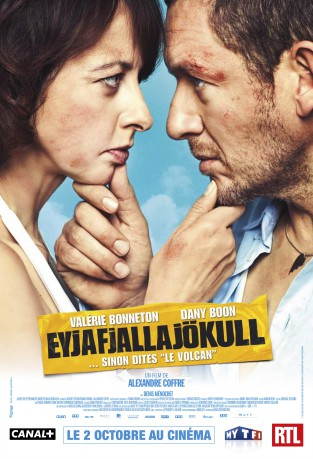

#9946 Eyjafjallajökull - Der unaussprechliche Vulkanfilm
 gesehen am 26.11.2018
gesehen am 26.11.2018
 
 IMDB-Wertung: 5.5 / 10
IMDB-Wertung: 5.5 / 10  Metascore: 0
Metascore: 0 
For travelers around the world, the eruption of the Icelandic volcano Eyjafjallajökull is a downer. For Alain and Valerie, it's a catastrophe. For if they are to make it in time to the tiny Greek village where their daughter's wedding is taking place, the two divorcees have to swallow their pathological hatred for each other and hit the road together.
Jahr: 2013
Dauer: 92 Minuten
FSK: 6
Land: Frankreich Studio: SquareOne EntertainmentTonspuren:
Untertitel:
Auflösung: 1080p (1920x808) Größe: 4300 MB
Genre: Komödie
Regisseur: Alexandre Coffre
Drehbuch: Laurent Zeitoun, Yoann Gromb, Alexandre Coffre, Yoann Gromb
Soundtrack: Thomas Roussel
Darsteller:
 Dany Boon als Alain
Dany Boon als Alain Denis Ménochet als Ezéchiel
Denis Ménochet als Ezéchiel Albert Delpy als Tonton Roger
Albert Delpy als Tonton Roger Jochen Hägele als Agent Avis Allemagne
Jochen Hägele als Agent Avis Allemagne- Magdalena Steinlein als Fille station-service
- Thodoros Katsafados als Commissaire grec
- Chryssa Florou als Traductrice grecque
- Valérie Bonneton als Valérie
- Bérangère McNeese als Cécile
- Constance Dollé als Sylvie
- Myriam Azencot als Voisine avion
- Arnaud Henriet als Voisin avion Alain
- Yann Sorton als Stewart grec
- Barbara Ornellas als Femme autocar
- Malik Bentalha als Ami Cécile
- Tiphaine Daviot als Amie Cécile
- Brigitte Böttrich als Propriétaire B&B
- Markus Baumeister als Homme station-service
- Joan Pascu als Chauffeur autocar
- Joze Zalar als Supporter bus
- Jernej Campelj als Réceptionniste hôtel nuit Slovénie
- Sanja Marin als Réceptionniste hôtel jour Slovénie
- Amar Bukvic als Policier 1 aéroport Ljubljana
- Frano Domitrovic als Policier 2 aéroport Ljubljana
- Adnan Palangic als Erion
- Valentine Carette als Joshina
- Bozidar Smiljanic als Osman
- Bartholomew Boutellis als Stavros
- Filippos Zografos als Le pope
- Athina Masoura als Choeur 1
- Ioannis Papazoglou als Choeur 2
Datei: X:\2013(A-F)\Eyjafjallajökull - Der unaussprechliche Vulkanfilm (2013, FSK6, 1920x808).mkv seit 14.11.2018
Festplatte: HD 2012(N-Z)-2013(A-H)
 Es gibt insgesamt 127 Filme in der Gruppe '2013(A-F)'
Es gibt insgesamt 127 Filme in der Gruppe '2013(A-F)'